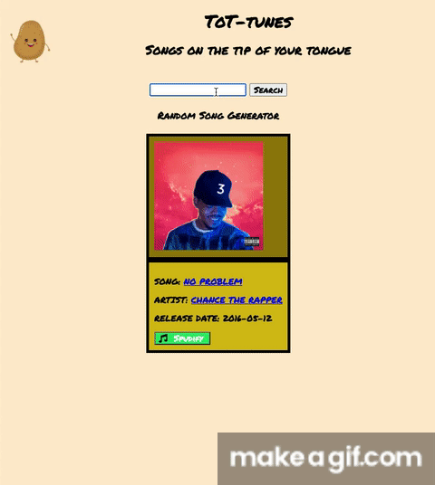

Portfolio

ToT-tunes app. You can input lyrics to find the song, generate a random song, and travel to the genius.com page for the song or artist.
ToT-tunes app. You can input lyrics to find the song, generate a random song, and travel to the genius.com page for the song or artist.